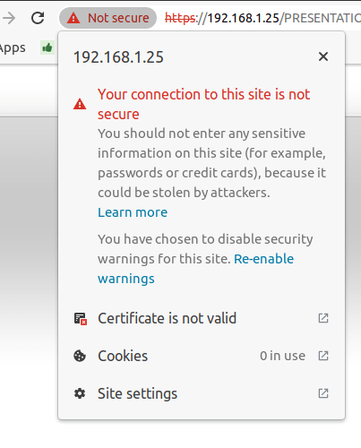
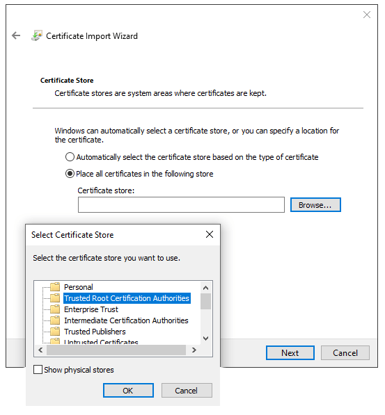

Certificado autofirmado para impresoras electrónicas del PdV¶
Es probable que algunos modelos de impresora que se pueden usar sin una caja IoT necesiten un protocolo HTTPS para establecer una conexión segura entre el navegador y la impresora. Sin embargo, la mayoría de los navegadores le mostrarán una página de advertencia si intenta conectarse a la dirección IP de la impresora a través HTTPS. En ese caso, puede forzar la conexión de forma temporal, así podrá conectarse a la página HTTPS y usar una impresora ePOS con Odoo siempre y cuando no cierre la ventana del navegador.
Advertencia
Si cierra la ventana del navegador se perderá la conexión. Por lo tanto, este método solo se debe usar como una solución temporal o como un requisito previo para las siguientes instrucciones.
Genere, exporte e importe certificados autofirmados¶
Para obtener una solución a largo plazo debe generar un certificado autofirmado. Después, expórtelo e impórtelo a su navegador.
Importante
Un certificado SSL solo se debería generar una vez. Si crea otro certificado, los dispositivos que usen el certificado previo perderán el acceso al HTTPS.
Navegue a la dirección IP de la impresora ePOS (p. ej. https://192.168.1.25) y haga clic en Avanzado y después en Proceeder a [dirección IP] (no es seguro) para forzar la conexión.
Página de advertencia de Google Chrome en Windows 10¶
Después, use las credenciales de su impresora para ingresar a los ajustes de la impresora ePOS. Para iniciar sesión, ingrese epson en el campo ID y en el campo Contraseña ingrese el número de serie de la impresora.
Para generar un certificado autofirmado haga clic en Certificate list (lista de certificados) que se encuentra en la sección de Autenticación. El Common Name (nombre común) se debería de llenar de manera automática, pero si no es así ahí puede poner la dirección IP de la impresora. En el campo Validity Period (periodo de validez) ponga los años por los que el certificado será válido, haga clic en Create (crear) y restablezca o reinicie la impresora manualmente.
Ya se generó el el certificado autofirmado. Vuelva a cargar la página, vaya a la sección Security (seguridad) y haga clic en SSL/TLS para asegurarse de que el certificado autofirmado se seleccionó correctamente en la sección Server certificate (certificado del servidor).
El proceso de exportación depende mucho del Sistema operativo y del navegador. Primero vaya a la dirección IP (p. ej., https://192.168.1.25) e ingrese a los ajustes de su impresora ePOS en su navegador web Después, fuerce la conexión como se explica en Generar un certificado autofirmado.
Si está usando Google chrome,
haga clic en No es seguro a un lado de la barra de búsqueda, Certificado inválido;
vaya a la pestaña Detalles y haga clic en Exportar;
agregue
.crtal final del nombre del archivo para asegurarse de que sea la extensión correcta;seleccione Base64-encoded ASCII, single certificate (Base64-codificado ASCII, certificado único), que se encuentra en la parte inferior de la ventana emergente;
guárdelo y habrá exportado el certificado.
Advertencia
Asegúrese de que el certificado termina con la extensión .crt. Si no es así, es probable que algunos navegadores no puedan ver el archivo durante el proceso de importación.
Si está usando Mozilla Firefox,
haga clic en el icono en forma de cerradura que se encuentra a la izquierda de la barra;
vaya a ;
baje a la sección Misceláneo;
haga clic en PEM (cert) que se encuentra en la sección Descargar;
guárdelo y habrá exportado el certificado.
El proceso de importación depende mucho del Sistema operativo y del navegador.
Windows 10 gestiona certificados, lo que significa que los certificados autofirmados se tienen que importar desde el archivo de certificación y no del navegador. Para hacerlo,
abra el explorador de archivos de Windows y encuentre el archivo de certificación que descargó;
haga clic derecho en el archivo de certificación y presione Instalar certificado;
seleccione dónde instalar el certificado y si para el Usuario actual o para todos los usuarios (equipo local) y después haga clic en Siguiente;
en la pantalla de
Almacén de certificadosmarque Place all certificates in the following store (Colocar todos los certificados en el siguiente almacenamiento), haga clic en Buscar… y seleccione Entidades de certificación raíz de confianza;haga clic en Terminar y acepte la ventada emergente;
reinicie la computadora para asegurarse de que se aplicaron los cambios.
Si está usando Google chrome,
abra Chrome;
vaya a ;
vaya a la pestaña Entidades, haga clic en Importar y seleccione el archivo de certificación que exportó;
acepte todas las advertencias;
haga clic en ok;
reinicie su navegador.
Si está usando Mozilla Firefox,
abra Firefox;
go to ;
seleccione el archivo de certificado que exportó;
marque las casillas y valide;
reinicie su navegador.
Para asegurar la conexión en Mac OS en todos los navegadores, tiene que seguir los siguientes pasos:
abra Safari y vaga a la dirección IP de su impresora. Esto lo dirigirá a una página de advertencia;
en la página de advertencia, vaya a :menuselection:`Mostrar detalles –> visite este sitio web –> Visitar sitio web, valídelo;
reinicie la impresora para que la puede usar con cualquier navegador.
Para generar y exportar un certificado SSL y enviarlo a dispospositivo IOS, abra Google Chrome o Mozilla Firefox. Después,
Navegue a la dirección IP de la impresora ePOS (p. ej. https://192.168.1.25) y haga clic en Avanzado y después en Proceeder a [dirección IP] (no es seguro) para forzar la conexión.
Página de advertencia de Google Chrome en Windows 10¶
Después, use las credenciales de su impresora para ingresar a los ajustes de la impresora ePOS. Para iniciar sesión, ingrese epson en el campo ID y en el campo Contraseña ingrese el número de serie de la impresora.
Para generar un certificado autofirmado haga clic en Certificate list (lista de certificados) que se encuentra en la sección de Autenticación. El Common Name (nombre común) se debería de llenar de manera automática, pero si no es así ahí puede poner la dirección IP de la impresora. En el campo Validity Period (periodo de validez) ponga los años por los que el certificado será válido, haga clic en Create (crear) y restablezca o reinicie la impresora manualmente.
Ya se generó el el certificado autofirmado. Vuelva a cargar la página, vaya a la sección Security (seguridad) y haga clic en SSL/TLS para asegurarse de que el certificado autofirmado se seleccionó correctamente en la sección Server certificate (certificado del servidor).
El proceso de exportación depende mucho del Sistema operativo y del navegador. Primero vaya a la dirección IP (p. ej., https://192.168.1.25) e ingrese a los ajustes de su impresora ePOS en su navegador web Después, fuerce la conexión como se explica en Generar un certificado autofirmado.
Si está usando Google chrome,
haga clic en No es seguro a un lado de la barra de búsqueda, Certificado inválido;
vaya a la pestaña Detalles y haga clic en Exportar;
agregue
.crtal final del nombre del archivo para asegurarse de que sea la extensión correcta;seleccione Base64-encoded ASCII, single certificate (Base64-codificado ASCII, certificado único), que se encuentra en la parte inferior de la ventana emergente;
guárdelo y habrá exportado el certificado.
Advertencia
Asegúrese de que el certificado termina con la extensión .crt. De lo contrario, es probable que algunos navegadores no encuentren el archivo en el proceso de importación.
Si está usando Mozilla Firefox,
haga clic en el icono en forma de cerradura que se encuentra a la izquierda de la barra;
vaya a ;
baje a la sección Misceláneo;
haga clic en PEM (cert) que se encuentra en la sección Descargar;
guárdelo y habrá exportado el certificado.
Para importar el certificado SSL a un dispositivo Android primero debe crearlo y exportarlo desde una computadora. Después, transfiera el archivo .crt al dispositivo a través de un correo, Bluetooth o USB. Una vez que el archivo esté en el dispositivo,
abra los ajustes y busque el
certificado;haga clic en Certificado CA (Instalar desde el almacenamiento del dispositivo);
seleccione el archivo de certificado para instalarlo en el dispositivo.
Nota
Es probable que los pasos a seguir para instalar el certificado cambien dependiendo de la versión de android o el fabricador del dispositivo.
Para importar el certificado SSL a un dispositivo iOS primero debe crearlo y exportarlo desde una computadora. Después, transfiera el archivo .crt al dispositivo a través de un correo, Bluetooth, o cualquier servicio para compartir archivos.
Al descargar este archivo se activa una ventana emergente de advertencia. Haga clic en Permitir para descargar el perfil de configuración y cerrar la segunda ventana emergente. Después,
vaya a la aplicación Configuraciones en el dispositivo iOS;
haga clic en perfil descargado en la caja de detalles del usuario;
buque el archivo
.crtdescargado y selecciónelo;haga clic en Instalar en la parte superior derecha de la pantalla;
si el dispositivo tiene contraseña, ingrese la contraseña;
haga clic en Instalar en la parte superior derecha de la ventana de advertencia del certificado y en la ventana emergente;
haga clic en Listo.
El certificado se instaló, pero todavía se tiene que autenticar. Para hacerlo,
vaya a ;
active el certificado instalado con el botón deslizable;
haga clic en Continuar en la ventana emergente.
Importante
Si necesita exportar certificados SSL desde un sistema operativo o un navegador que no hemos mencionado, busque
exportar certificado SSL+el nombre de su navegador o sistema operativoen su motor de búsqueda preferido.Es lo mismo si necesita importar certificados SSL desde un sistema operativo o navegador que no mencionamos, busque
exportar certificado SSL+el nombre de su navegador o sistema operativoen su motor de búsqueda preferido.
Revise si el certificado se importó correctamente¶
Para confirmar que la conexión de su impresora es segura, conéctese a su dirección IP mediante HTTPS. Por ejemplo, vaya a https://192.168.1.25 en su navegador. Si el certificado SSL se aplicó de forma correcta, entonces ya no debería aparecer la página de advertencia y en la barra de direcciones debería aparecer un icono de candado que indica que la conexión es segura.